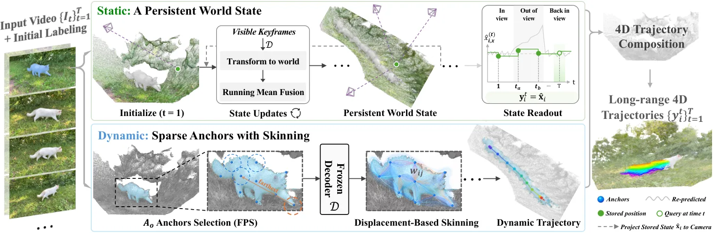
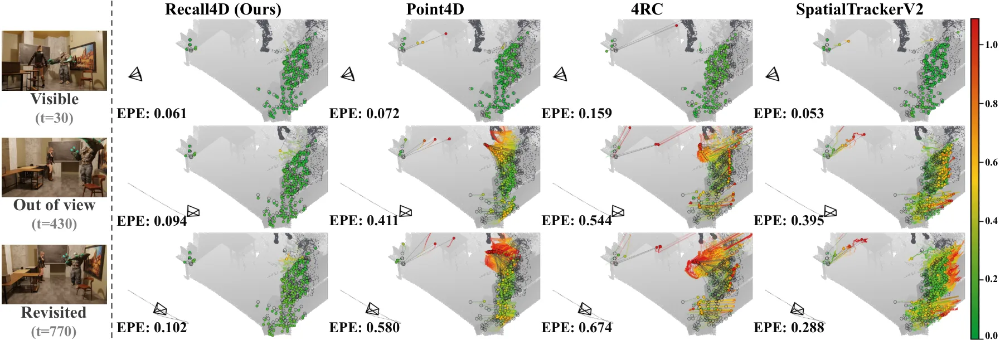
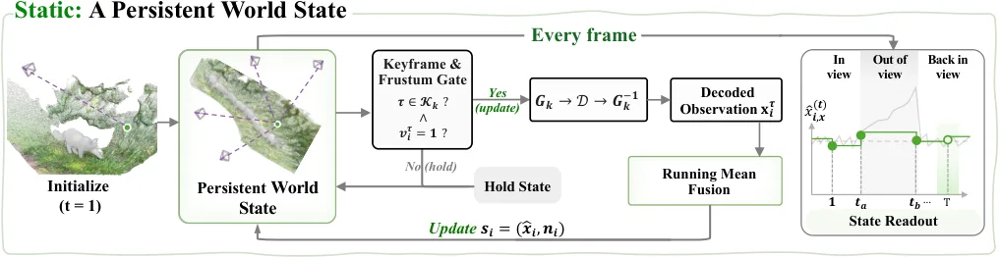
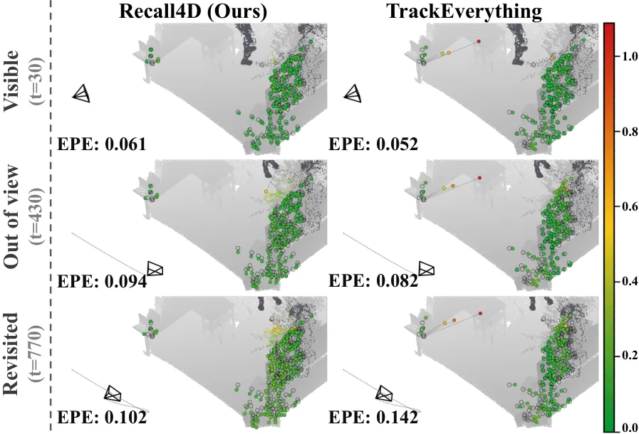
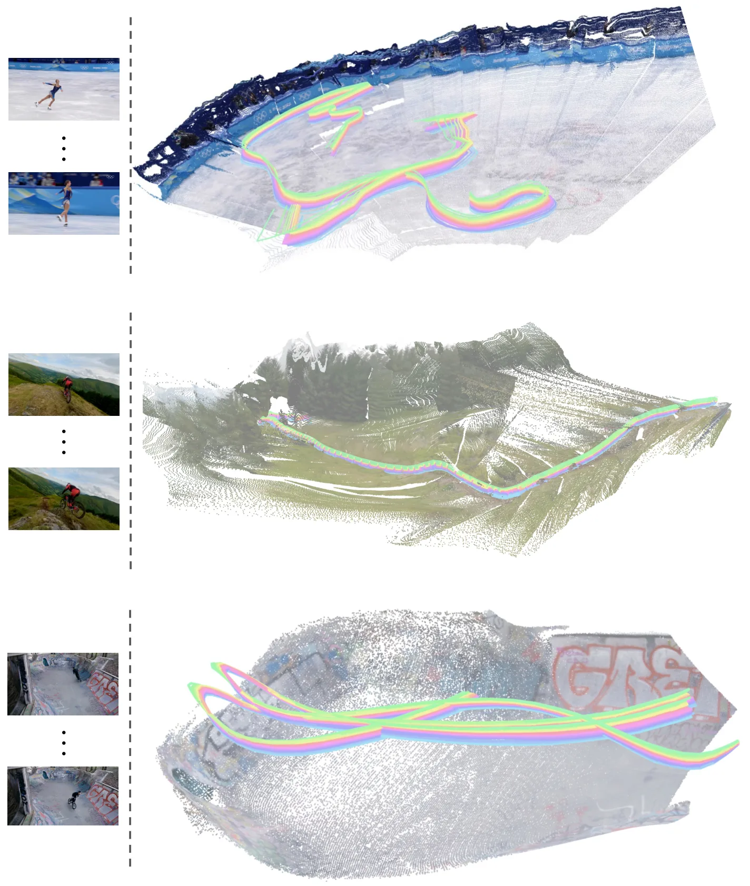

Recall4D：拖垮长时 4D 重建的是遗忘，不是错配
Recall4D: Forgetting, Not Misalignment, Limits Long-Horizon Feed-Forward 4D Reconstruction
一句话：长视频退化的主因是「对没看见的点继续重新预测」，所以修法不是更好的对齐而是一个记忆——看不见就保持，看得见才平均更新；动态物体只跟踪少量锚点再蒙皮。
EPE
speedup
EPE
SR
作者、单位与技术谱系 · Research context
作者与单位
研究脉络
- Point4D（M. Jeon, J. Karhade, D. Ramanan, S. Tulsiani，2026）方法基座关系：骨干与主基线：Recall4D 直接加载其冻结权重，所有消融都以「chained Point4D」为起点，诊断也基于它的输出。[Recall4D §5 与参考文献 [14]（arXiv:2609.09145）]
- TrackEverything（A. Jain 等，2026）并发工作关系：独立收敛的同类设计：它也保持静态点不动，本文把它同时作为对照与「诊断可信」的旁证。[Recall4D §6.1/§6.4 与参考文献 [13]（arXiv:2609.30222）]
- SpatialTrackerV2（短时滑窗 3D 跟踪）研究上游关系：对照与问题定位：它按 Point4D 的滑窗策略链式推理，用来证明「短时方法在长序列上掉得更快」。[Recall4D §5 与表 2]
- VGGT-Long（K. Deng 等，ICRA 2026）评价对象关系：跨任务验证：把 Recall4D 加在它的长序列重建管线上，检验「遗忘」是否也存在于 3D 重建。[Recall4D 表 7 与参考文献 [5]]
合作网络
- Tianle Lyu ↔ Carnegie Mellon UniversityTianle Lyu → Carnegie Mellon University关系：署名关系（唯一作者）[arXiv 官方 HTML 首页]
- Recall4D ↔ Point4DRecall4D → Point4D（arXiv:2609.09145）关系：技术依赖：冻结骨干权重[Recall4D §5 与参考文献 [14]]
- Recall4D 项目页Tianle Lyu → https://kincin.github.io/Recall4D/关系：论文 comment 给出的项目主页[arXiv 摘要页 comment]
单作者工作，公开合作边只有「作者—机构」与「方法与骨干/项目页」两类；未发现作者层面的跨机构合作边，也未据项目页推断导师或实验室隶属。正文明确说明骨干为 Point4D 且权重冻结。
方法本质拆解 · What actually changed
完全不训练
骨干（Point4D，以及用于泛化实验的另外五个前馈 4D 模型）权重全部冻结，Recall4D 本身没有任何可学习参数。新增的东西只有世界状态容器、锚点集合与蒙皮插值，都是测试时的数据结构与闭式计算，因此「换了骨干也不掉」是它的设计属性而非调参结果。
一条硬规则加一层分解约束
核心约束是规则式的：静态点一旦整窗未见就保持最后观测位置，只有重新进入视野才被更新，且更新用多关键帧运行平均而不是覆盖。第二层约束是分解：用 SAM 3.1 首帧实例掩码把点分成静态/动态两类，动态点只能沿锚点位移场运动，查询点的位移由最近 H=6 个锚点蒙皮得到。注册侧还加了一条：Sim(3) 拟合只用重叠帧深度并排除前景像素。
三路推理，没有新网络
推理分三路并行：窗口骨干前向（48 帧/窗、重叠 8）、世界状态更新（每窗 4 个关键帧解码并平均）、动态锚点解码 + 蒙皮传播。运行时的主要节省来自「不是每个查询每帧都解码」——锚点把解码量压到每实例 ≤32 个，查询越多相对收益越大（8,192 查询时快 7.9×，32,768 时快 13.2×）。
切断「无观测重复预测」这条误差通道
它改变的不确定性是「跨窗点位置的传递误差」：原来的做法是每窗重新预测并覆盖，等于用没有观测信息的预测去污染已恢复的几何；新做法是把「有观测」作为写入门槛，并用平均降低单次预测噪声。局部结果通过世界状态与锚点蒙皮接成长程轨迹；它没有做的是改进骨干的运动预测，也没有学习记忆，因此长时绝对误差仍受骨干上限约束。
输入是单目视频与首帧查询点；改变的是点轨迹的跨窗传递规则（权重不动）；动作为持久世界状态 + 稀疏锚点几何蒙皮；直接效果是 2,000 帧 EPE 4.634 且比骨干快 7.6×。

结论与问题Conclusion & Motivation
核心结论
长视频 4D 跟踪退化的主因是「遗忘」而不是跨窗口对齐误差：把所有交接处的 Sim(3) 换成真值变换后，PointOdyssey 上 EPE 仍是 1.568 对基线 1.569，整条误差曲线无法区分。真正的规律是误差随「距上次被观测的帧数」增长——静态点从可见时的 1.25 涨到 400 帧未见后的 2.30，即使完美配准也有 2.45。作者据此提出 Recall4D：冻结骨干，加持久世界状态与稀疏运动锚点，2000 帧上 EPE 从 Point4D 的 5.334 降到 4.634、SR 从 0.178 升到 0.362，且快 7.6 倍。
动机与问题
前馈 4D 跟踪器按固定长度窗口处理视频，跨窗靠重叠帧估一个 Sim(3) 接起来；视频一长就退化，直觉解释是误差逐窗累积。作者先按这个假设做了两件事——改进跨窗对齐、在重叠帧上平滑预测——都没有效果，于是转向诊断。诊断的关键是把「对齐」和「点的传递」分开：前者可以用真值替换，后者不能。替换后发现误差不动，说明问题不在注册，而在「一个点在没有观测的窗口里被怎样对待」。论文进一步指出这不只是精度问题：每个窗口都重新从单一 3D 位置推导同一个点，即使点一直在视野里，也会持续注入新的预测噪声（可见静态点 EPE 从前 200 帧的 0.83 涨到后 200 帧的 1.71）。
方法Method
方法总览
Recall4D 是一个免训练插件，骨干（默认 Point4D）权重完全冻结，视频按 L=48 帧、重叠 8 帧、步长 40 切窗。静态几何进入持久世界状态：只在窗内 m=4 个均匀关键帧被观测解码，并用运行平均融合，离开视野时保持世界坐标不动，回到视野再精化。动态物体走另一条路：用 SAM 3.1 的首帧实例掩码把前景分成实例，每实例最多 32 个锚点（实际 24–32），每帧只解码这些锚点，再用几何蒙皮按每个查询最近的 H=6 个锚点的位移传播到稠密查询。两路合并成每条查询的长程 4D 轨迹。
关键技术细节
几个设计决定了它为什么便宜又准。窗口之间的注册仍是 trimmed Sim(3)，但拟合只用重叠帧深度并排除前景掩码内的像素，避免动态物体污染尺度。静态点的更新规则是「有观测才写」：只有在视野内的关键帧才解码并平均，未观测窗口完全不写状态，因此不会用无观测的预测覆盖已恢复几何。动态侧的稀疏化把解码量从 N 个查询降到每实例 A_o 个锚点，所以运行时间对查询数几乎不敏感：查询从 256 增到 32,768，Point4D 的时间涨 46.8×，Recall4D 只涨 3.4×。

实验Experiments
实验设置
评测用两个长序列基准：PointOdyssey（视频平均 2,035 帧）与 Dynamic Replica（测试序列 900 帧），诊断与消融在 val、对比在 test。每条序列最多 8,192 个查询点（平均 6.2k），取自第一帧可见点；指标为 EPE、APD（δ3D∈{0.1,0.3,0.5,1.0} m 的平均）、SR、动态点 EPE 与每段视频推理时间，误差在首帧相机坐标下、每段视频做一次全局中位尺度归一后计算。所有方法在单卡 H100（80 GB）、内存限 40 GB 下运行，超限记 OOM；对照包含两个长视频方法（Point4D、并发 TrackEverything）与六个短时方法（SpatialTrackerV2、V-DPM、4RC、Any4D、TraceAnything、Track4World）。
实验数字与比较
500 帧 PointOdyssey 上 Recall4D EPE 0.836、APD 0.521、SR 0.440，Point4D 为 0.979/0.466/0.370，4RC 1.626/0.347/0.283，V-DPM 1.281/0.391/0.320，时间 74.9 s 对 582.1 s。Dynamic Replica 500 帧 EPE 0.262（Point4D 0.307、4RC 0.444）。长时外推：2,000 帧 EPE 4.634 对 5.334、SR 0.362 对 0.178、时间 264 s 对 2,019 s；1,500 帧 EPE 4.595 对 5.211。跨骨干（TraceAnything、Any4D、V-DPM、4RC、Track4World）EPE 降 10–23% 且全部更快；跨任务上 CoTracker3 的 AJ 35.2→39.3、VGGT-Long 的 ATE 2.097→1.894、Video Depth Anything 的 AbsRel 0.092→0.084。
消融/失败边界
组件消融（PointOdyssey val 500 帧）把贡献拆得很干净：只加持久状态 EPE 1.813→1.355（降 25%），只加稀疏锚点 1.798（精度几乎不动，但省 40–50% 时间），两者合并 1.338 且时间 66.0 s（比基线快 8.8×）；per-window rebinding 1.348、再加 retention gate 1.390 都没有更好，gate 还会让时间涨到 237 s。分解方式对照：全静态基线 EPE 0.942 但 SR 只有 0.288（运动点被冻结）；用 GT 单窗标签把 EPE 压到 0.918，SR 也只到 0.385，说明分解不是瓶颈、剩下的误差来自骨干运动预测——这同时是它的失败边界：超过约 1,500 帧后所有方法误差都高，训练免插件修不了骨干本身的预测误差。
局限与迁移Limitations & Transfer
局限与待核验
作者明确承认：移动物体仍完全依赖骨干的运动预测，把记忆扩展到动态是自然的下一步；方法依赖首帧实例掩码，而分解错误中「把静态点误判为动态」的假阳性代价最高（retention gate 有 7.0% 漏检但 58% 假阳性，是最差的分解方式）。我们待核验：这是单作者的 CMU 工作，正文只在 comment 给出项目页（kincin.github.io/Recall4D），未见代码仓库与训练数据说明；真实视频结果放在附录 C.3，正文数字主要来自合成基准，real-world 的结论强度需单独核对；另外「保持最后观测位置」在相机长时间离开后重访时如何避免与新观测冲突，正文只给了运行平均，未讨论鲁棒核。
与你研究路线的关系
这篇提供的是一个误差归因范式：把「状态怎么维护」和「窗口怎么对齐」当作两个可分别干预的误差源，用真值 oracle 逐个排除。我们做 GNSS/INS 长时滤波时经常把漂移笼统归给对齐或外参，实际可能是状态更新策略（无观测时是否继续更新、协方差是否膨胀）。可迁移模块有两个：一是「只在有观测时更新、无观测时保持」的状态规则，可直接对应滤波里的状态保持/协方差膨胀决策；二是稀疏锚点 + 蒙皮的降本结构，适合我们对多假设或稠密查询做成本控制。下一步实验：在我们 >1 km 的序列上做同样的 oracle 对照（真值位姿 vs 估计位姿），确认残余漂移中「对齐」与「状态遗忘」各占多少，再决定是否引入类似的持久状态层。







